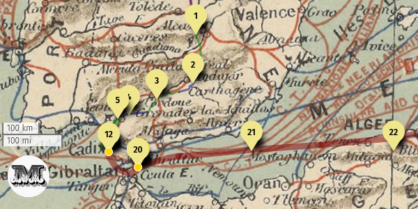

uMap permite añadir el logotipo de nuestro proyecto o institución en la esquina inferior izquierda. Además, podemos convertirlo en un vínculo que lleve a la página de nuestra institución al pulsarlo.
Para ello, activad el Modo edición y pulsad Editar nombre y leyenda del mapa en la barra de herramientas de la derecha.
Desplegad la pestaña Créditos e id a Créditos permanentes. Aquí se nos permite editar lo que aparecerá en la esquina inferior izquierda de nuestro mapa.
Se puede añadir muchas cosas utilizando la sintaxis soportada por uMap. Para consultarla pulsad Ayuda.
A continuación, voy a mostrar paso a paso cómo crear el logo-vínculo. Es interesante entender cómo funciona porque es un ejemplo muy simple y esta misma mecánica puede aplicarse a otras funcionalidades de uMap. Si ya has entendido cómo funciona uMap, puedes copiar directamente el código que he puesto al final de esta página y adaptarlo tú mismo.
Para añadir la imagen de un logo tan solo tenemos que envolver la dirección web en la que se encuentra la imagen entre llaves dobles. Por ejemplo, si introducimos lo siguiente se mostrará el logo de ACAL 1.
Créditos permanentes:
{{https://acal.es/images/portada/logo/logo-ojsacal.png}}
Si los colores del mapa impiden ver correctamente el contenido de los créditos permanentes se puede activar el botón Fondo de créditos permanentes.
Si queremos modificar el ancho del logo podemos especificarlo después de la dirección. Para ello utilizamos una barra vertical como separador y añadimos el tamaño en píxeles. Por ejemplo, si queremos que el ancho sea de 60 píxeles podemos hacerlo así:
Créditos permanentes:
{{https://acal.es/images/portada/logo/logo-ojsacal.png|60}}
Ahora que tenemos la imagen, podemos convertirla en un hipervínculo que nos dirija a la página de
nuestra institución.
En uMap los vínculos se envuelven en dobles corchetes y el texto del vínculo se especifica después
del separador |. Un ejemplo sería:
[[https://acal.es/|Visite nuestra página web]]
En nuestro caso, en lugar de añadir un texto como Visite nuestra página web, queremos añadir una imagen. Para eso vamos a utilizar el código que hemos generado anteriormente y lo vamos a incluir en el espacio reservado al texto:
Créditos permanentes:
[[https://acal.es/|{{https://acal.es/images/portada/logo/logo-ojsacal.png|60}}]]
Ahora la imagen actuará como hipervínculo. ¡El logo-vínculo está terminado!
Créditos permanentes:
[[Dirección de la web que queremos enlazar|{{Dirección de la imagen del logo que queremos usar}}]]